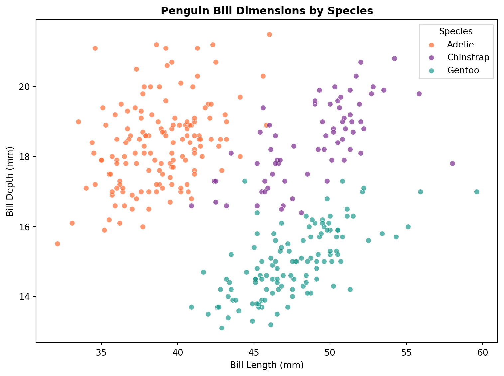
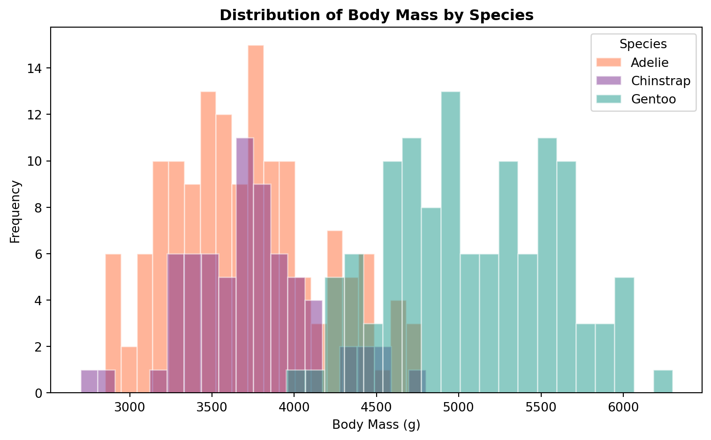
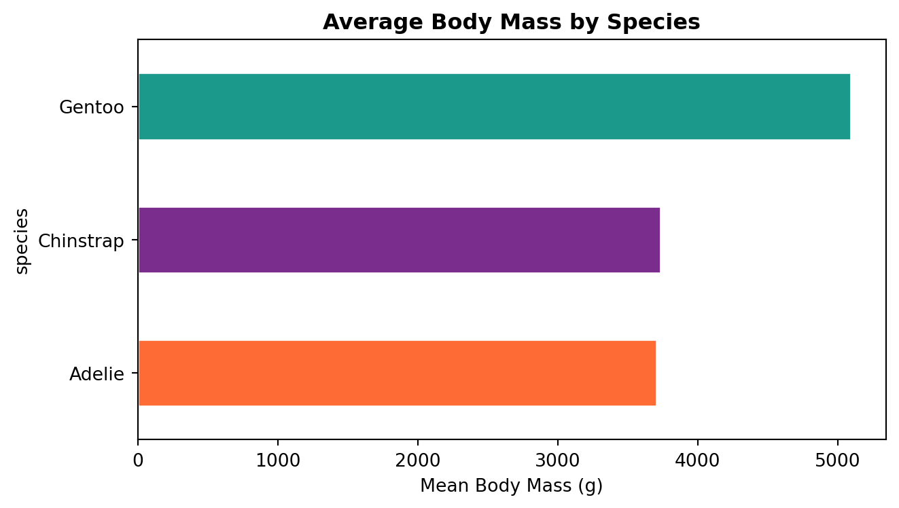
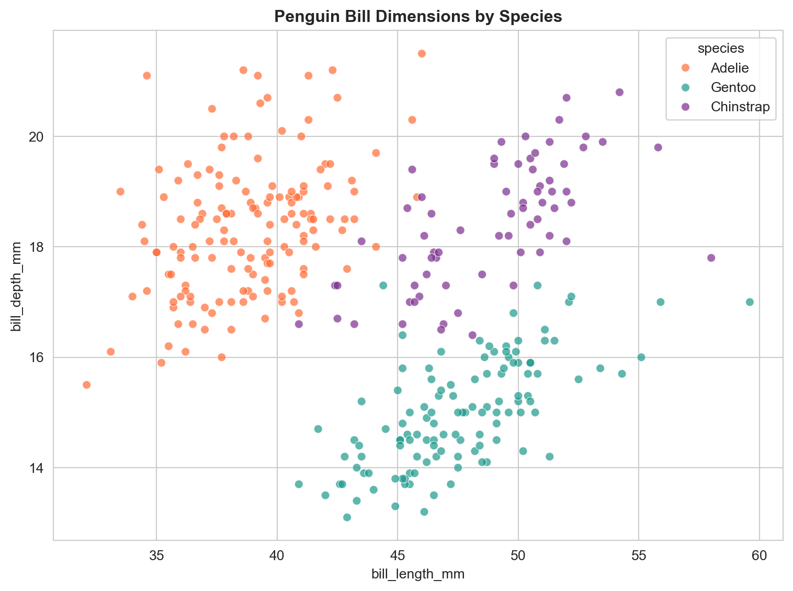
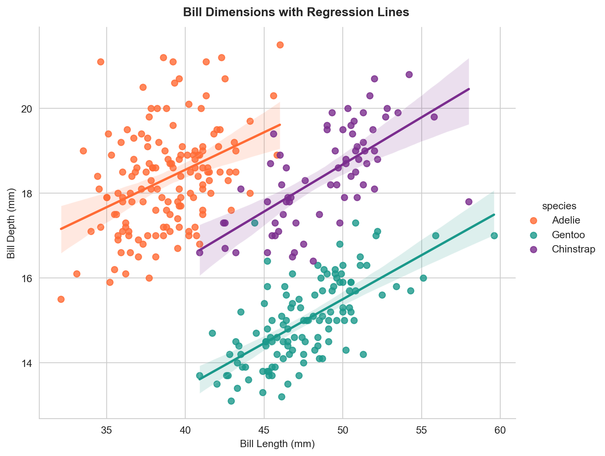
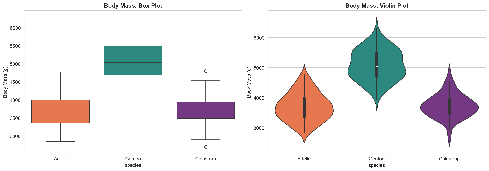
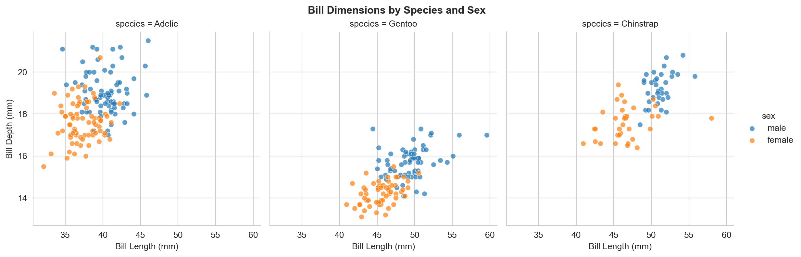

Welcome to the Tutorial! This lab builds on the concepts covered in yesterday’s lecture. You have up to 2 hours in the lab to review what you have learned and apply it through a series of exercises. Some code snippets are provided for you to execute, but do not just run them blindly – take the time to understand what each line does.
Today we focus on data visualisation using three Python libraries, each with different strengths. By the end of the lab you will know which package is best suited for a given task and be able to produce common chart types with each.
Duration: approximately 2 hours
What you need:
Python 3.10+ with pandas, matplotlib, seaborn, altair, and palmerpenguins installed
A Python script, Jupyter notebook, or Quarto document to write your code
Structure:
Section
Topic
Approx. Time
1
Palmer Penguins dataset
10 min
2
Matplotlib
30 min
3
Seaborn
40 min
4
Altair
30 min
–
Final challenge
10 min
A Note on Polars
I promised to prepare the Polars package material, but could not get it ready in time. We will cover Polars later in a future lecture.
Section 1: The Palmer Penguins Dataset
About the Data
The palmerpenguins data package (originally an R package, also available in Python) contains measurements that serve as an alternative to Anderson’s classic Iris dataset. It records body weight, bill length, flipper length, and body mass for three species of penguins: Adelie, Gentoo, and Chinstrap.
The dataset was collected by Dr Kristen Gorman and the Palmer Station Long Term Ecological Research (LTER) programme, part of the US National Science Foundation. Data were gathered during the breeding season from 2007 to 2009 at Palmer Station, Antarctica.
The Palmer Penguins dataset contains 344 observations and 8 variables:
species (categorical): the species of penguin (Adelie, Gentoo, or Chinstrap)
island (categorical): the island where the penguin was observed (Biscoe, Dream, or Torgersen)
bill_length_mm (numerical): the length of the penguin’s bill in millimetres
bill_depth_mm (numerical): the depth of the penguin’s bill in millimetres
flipper_length_mm (numerical): the length of the penguin’s flipper in millimetres
body_mass_g (numerical): the body mass of the penguin in grams
sex (categorical): the sex of the penguin (male or female)
year (numerical): the year the data was collected (2007, 2008, or 2009)
What are Culmen Length and Depth?
The culmen is the upper ridge of a bird’s beak. In the simplified penguins subset, culmen length and depth have been renamed to bill_length_mm and bill_depth_mm.
Data citation: Gorman KB, Williams TD, Fraser WR (2014). Ecological sexual dimorphism and environmental variability within a community of Antarctic penguins (genus Pygoscelis). PLoS ONE 9(3):e90081. https://doi.org/10.1371/journal.pone.0090081
Licence: Data are available by CC-0 licence in accordance with the Palmer Station LTER Data Policy and the LTER Data Access Policy for Type I data.
Task 1: Loading the Data
# Install if needed (run once):# pip install palmerpenguinsimport pandas as pdimport numpy as npfrom palmerpenguins import load_penguinspenguins = load_penguins()print(f"Shape: {penguins.shape}")penguins.head()
matplotlib is the foundational plotting library in Python. It is very well tested, robust, and can reproduce just about any plot (sometimes with a lot of effort). The trade-off is that the syntax can be verbose and imperative, and it has limited support for interactive or web graphics out of the box.
You do not need to memorise the syntax for every plotting function. The matplotlib gallery is an excellent reference.
Task 3: Scatter Plot
import matplotlib.pyplot as pltfig, ax = plt.subplots(figsize=(8, 6))# Colour each species differentlycolours = {"Adelie": "#FF6B35", "Chinstrap": "#7B2D8E", "Gentoo": "#1B998B"}for species, group in penguins.groupby("species"): ax.scatter( group["bill_length_mm"], group["bill_depth_mm"], label=species, color=colours[species], alpha=0.7, edgecolors="white", linewidth=0.5 )ax.set_xlabel("Bill Length (mm)")ax.set_ylabel("Bill Depth (mm)")ax.set_title("Penguin Bill Dimensions by Species", fontweight="bold")ax.legend(title="Species")plt.tight_layout()plt.show()

Notice how we loop through each species group and plot them separately to assign colours. This is the imperative style that is characteristic of matplotlib.
Your turn: Create a scatter plot of flipper_length_mm (x-axis) vs body_mass_g (y-axis), coloured by species. Add axis labels and a legend.
Task 4: Histogram
fig, ax = plt.subplots(figsize=(8, 5))for species, group in penguins.groupby("species"): ax.hist( group["body_mass_g"], bins=20, alpha=0.5, label=species, color=colours[species], edgecolor="white" )ax.set_xlabel("Body Mass (g)")ax.set_ylabel("Frequency")ax.set_title("Distribution of Body Mass by Species", fontweight="bold")ax.legend(title="Species")plt.tight_layout()plt.show()

Your turn: Create a histogram of flipper_length_mm for each island (not species). Use 15 bins. What can you see about the distributions?
Task 5: Bar Chart
# Mean body mass by speciesspecies_mass = penguins.groupby("species")["body_mass_g"].mean().sort_values()fig, ax = plt.subplots(figsize=(7, 4))species_mass.plot.barh( ax=ax, color=[colours[s] for s in species_mass.index], edgecolor="white")ax.set_xlabel("Mean Body Mass (g)")ax.set_title("Average Body Mass by Species", fontweight="bold")plt.tight_layout()plt.show()

Your turn: Create a grouped bar chart showing the mean bill length for each species, split by sex. Hint: use penguins.groupby(["species", "sex"])["bill_length_mm"].mean().unstack() and then .plot.bar().
seaborn is built on top of matplotlib and adds a high-level interface for drawing statistical graphics. It integrates closely with pandas DataFrames and handles grouping, faceting, and colour palettes automatically.
import seaborn as snssns.set_style("whitegrid")fig, ax = plt.subplots(figsize=(8, 6))sns.scatterplot( data=penguins, x="bill_length_mm", y="bill_depth_mm", hue="species", palette=colours, alpha=0.7, ax=ax)ax.set_title("Penguin Bill Dimensions by Species", fontweight="bold")plt.tight_layout()plt.show()

Notice how much less code this takes compared to the matplotlib version. Seaborn handles the grouping and legend automatically.
# Add regression lines per species using lmplotg = sns.lmplot( data=penguins, x="bill_length_mm", y="bill_depth_mm", hue="species", palette=colours, height=6, aspect=1.2)g.set_axis_labels("Bill Length (mm)", "Bill Depth (mm)")g.figure.suptitle("Bill Dimensions with Regression Lines", fontweight="bold", y=1.02)plt.show()

Simpson’s Paradox
If you were to fit a single regression line across all species, it would slope downwards, suggesting that longer bills have shallower depth. But within each species the relationship is positive. This is an example of Simpson’s Paradox, where a trend that appears in several groups reverses when the groups are combined.
Your turn: Create an lmplot of flipper_length_mm vs body_mass_g, coloured by species. Is there a positive relationship within each species?
/var/folders/th/wzvst6957_v02h6ztkc7qxw5_3lzg7/T/ipykernel_63358/286380130.py:4: FutureWarning:
Passing `palette` without assigning `hue` is deprecated and will be removed in v0.14.0. Assign the `x` variable to `hue` and set `legend=False` for the same effect.
/var/folders/th/wzvst6957_v02h6ztkc7qxw5_3lzg7/T/ipykernel_63358/286380130.py:15: FutureWarning:
Passing `palette` without assigning `hue` is deprecated and will be removed in v0.14.0. Assign the `x` variable to `hue` and set `legend=False` for the same effect.

Box plots show medians, quartiles, and outliers. Violin plots show the full shape of the distribution. The violin plot reveals, for example, that Gentoo penguins have a bimodal mass distribution (likely reflecting sexual dimorphism).
Your turn: Create a box plot of bill_length_mm by species, split by sex using the hue parameter. Which species shows the largest difference between males and females?
A pair plot produces scatter plots for every combination of numerical variables and distributions along the diagonal. This is a powerful way to spot clusters, correlations, and outliers across multiple dimensions at once.
Your turn: Create a pair plot using only the columns bill_length_mm, bill_depth_mm, flipper_length_mm, and body_mass_g, coloured by island instead of species. Do the islands show distinct clusters?
Your turn: Create a separate correlation heatmap for each species. Use a 1x3 subplot layout. Do the correlation patterns differ between species?
Task 11: FacetGrid
g = sns.FacetGrid( penguins, col="species", hue="sex", height=4, aspect=1)g.map_dataframe(sns.scatterplot, x="bill_length_mm", y="bill_depth_mm", alpha=0.7)g.add_legend()g.set_axis_labels("Bill Length (mm)", "Bill Depth (mm)")g.figure.suptitle("Bill Dimensions by Species and Sex", fontweight="bold", y=1.02)plt.show()

FacetGrid creates a grid of panels, one per category. This is ideal for comparing patterns across groups without overloading a single plot.
Section 4: Altair
Altair takes a fundamentally different approach from matplotlib and seaborn. Instead of writing imperative instructions (“draw a dot here, add a line there”), you write a declarative specification: you describe what the visualisation should show and let the library determine the details. Altair relies on the Vega-Lite JavaScript grammar of graphics.
# Install if needed (run once):# pip install altairimport altair as alt
Task 12: Basic Scatter Plot
chart = alt.Chart(penguins).mark_point().encode( x="bill_length_mm:Q", y="bill_depth_mm:Q", color="species:N").properties( title="Penguin Bill Dimensions by Species", width=500, height=400)chart
The key concepts in Altair are:
mark_point(), mark_bar(), mark_line(), etc. define the geometry
.encode() maps data columns to visual channels (x, y, colour, size, shape)
Type suffixes: :Q (quantitative), :N (nominal/categorical), :O (ordinal), :T (temporal)
Your turn: Modify the chart to use flipper_length_mm on the x-axis and body_mass_g on the y-axis. Add size="body_mass_g:Q" to the encoding. What happens?
Task 13: Interactive Scatter Plot
selection = alt.selection_point(fields=["species"])chart = alt.Chart(penguins).mark_circle(size=80).encode( x="bill_length_mm:Q", y="bill_depth_mm:Q", color=alt.condition( selection,"species:N", alt.value("lightgrey") ), tooltip=["species", "island", "bill_length_mm", "bill_depth_mm", "body_mass_g"]).add_params( selection).properties( title="Click a Species to Highlight", width=500, height=400)chart
Click on a point or legend entry to highlight that species. Hover over points to see tooltips. This interactivity comes “for free” with Altair – no additional code is needed beyond the selection definition.
Your turn: Add shape="island:N" to the encoding so that each island uses a different marker shape. Can you tell which island has which species?
Task 14: Bar Chart
chart = alt.Chart(penguins).mark_bar().encode( x=alt.X("species:N", title="Species"), y=alt.Y("count():Q", title="Count"), color="species:N").properties( title="Number of Penguins by Species", width=400, height=300)chart
# Grouped bar chart: species by sexchart = alt.Chart(penguins).mark_bar().encode( x=alt.X("species:N", title="Species"), y=alt.Y("mean(body_mass_g):Q", title="Mean Body Mass (g)"), color="sex:N", xOffset="sex:N").properties( title="Mean Body Mass by Species and Sex", width=400, height=300)chart
Your turn: Create a stacked bar chart showing the count of penguins per island, with each bar segmented by species. Hint: encode x="island:N", y="count():Q", and color="species:N".
Task 15: Faceted Charts
chart = alt.Chart(penguins).mark_point(filled=True, size=60).encode( x=alt.X("flipper_length_mm:Q", title="Flipper Length (mm)"), y=alt.Y("body_mass_g:Q", title="Body Mass (g)"), color="sex:N").facet( column="species:N").properties( title="Flipper Length vs Body Mass by Species")chart
Altair’s .facet() works like seaborn’s FacetGrid but with a declarative syntax.
Task 16: Histogram and Density
chart = alt.Chart(penguins).mark_bar(opacity=0.6).encode( x=alt.X("body_mass_g:Q", bin=alt.Bin(maxbins=30), title="Body Mass (g)"), y=alt.Y("count():Q", title="Frequency"), color="species:N").properties( title="Distribution of Body Mass by Species", width=500, height=300)chart
Your turn: Create a layered density plot of bill_length_mm using mark_area(opacity=0.5) with transform_density(). Refer to the Altair density transform docs.
Comparing the Three Libraries
Feature
matplotlib
seaborn
Altair
Style
Imperative (step-by-step)
High-level statistical
Declarative (specify what)
Interactivity
Limited (requires extra work)
Limited (inherits matplotlib)
Built-in (hover, click, zoom)
Statistical plots
Manual
Built-in (regression, distributions)
Via transforms
Learning curve
Steeper syntax
Easier for stats plots
Different paradigm
Best for
Full control, publication figures
Statistical exploration
Interactive dashboards, web
Which Library Should I Use?
There is no single “best” library. Use matplotlib when you need pixel-level control or are building complex custom layouts. Use seaborn for statistical exploration and when you want to produce common statistical plots quickly. Use Altair when you want interactivity, web-ready outputs, or a concise declarative syntax.
Final Challenge
Putting It All Together
Using any combination of matplotlib, seaborn, and Altair, produce a short visual analysis of the Palmer Penguins data that addresses the following question:
How do the physical characteristics of the three penguin species relate to each other, and do these relationships differ by sex or island?
Your analysis should include:
At least three different chart types (e.g. scatter, box, bar, heatmap, pair plot)
At least two different libraries from today’s lab
At least one interactive chart using Altair
Written interpretation: below each figure, write 2–3 sentences explaining what the visualisation reveals
Ideas to Explore
Does Simpson’s Paradox appear in any other variable combinations beyond bill length vs depth?
Which measurement best separates the three species?
Is sexual dimorphism (size difference between males and females) consistent across species?
Do penguins from different islands within the same species differ in size?
Time: approximately 10 minutes
What You Have Learnt
This lab introduced three Python visualisation libraries through the Palmer Penguins dataset:
matplotlib gave you full control over every element of a plot, at the cost of more verbose code. You created scatter plots, histograms, bar charts, and multi-panel figures.
seaborn streamlined statistical plotting with automatic grouping, faceting, and distribution visualisations. You used scatter plots, regression plots, box and violin plots, pair plots, heatmaps, and FacetGrids.
Altair introduced a declarative approach with built-in interactivity, tooltips, and concise specifications. You created interactive scatter plots, bar charts, faceted charts, and histograms.
These visualisation skills complement the data wrangling from Lab Week 02 and will be essential when you begin spatial data visualisation with GeoPandas in the coming weeks.